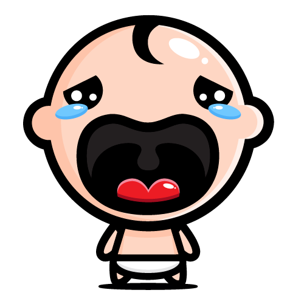

<div class="container main">
  <div class="contentConfirm" *ngIf="!cancelado">
    <h1 style="text-align: center;">¡Nos rompe el corazón que te vayas!</h1>
    <br />
    
    <button class="btn btn-secondary" type="button" routerLink="/perfil">
      ¡No, no quiero irme!
    </button>
    <br />
    <span (click)="cancelar()">Si, deseo cerrar mi cuenta</span>
  </div>
  <div class="cancelar" *ngIf="cancelado">
    <h1 style="max-width: 900px; text-align: center;">
      ¡Listo, lo has hecho, me has hecho llorar, tu cuenta PRO ha sido cerrada,
      puedes seguir usando la versión básica mientras nos volvemos a ver!
    </h1>
    <br>
    
    <br>
    <span (click)="back()">Ir al inicio</span>
  </div>
</div>
